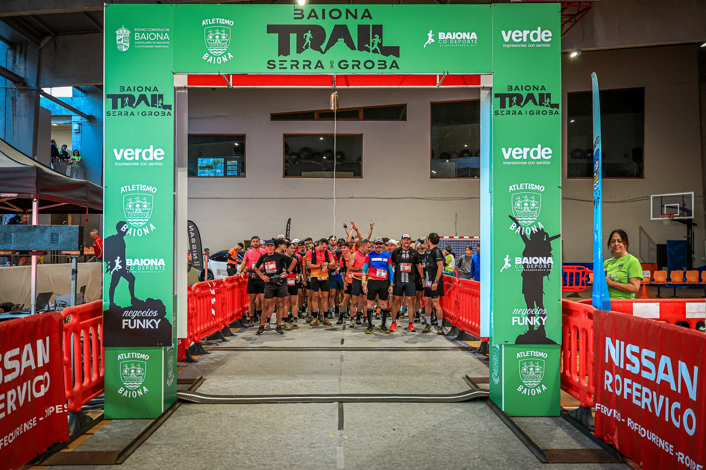

The XIII Trail de Baiona “Serra da Groba” took place on 31 October 2026. Organised by the sports department of the Concello de Baiona, it had its start and finish at the municipal sports hall in Baiona, Pontevedra.
The official programme listed four staggered departures: the 29 km Trail at 08:30, the 18.5 km Trailiño at 10:00, the 11.5 km Promotrail at 10:30 and the 11.5 km Andaina walk at 10:45.
From the start line to the mountains
The regulations describe forest tracks and traditional paths through Serra da Groba, with asphalt sections at the start and finish. The supplied photographs show both the gathered runners beneath the event arch and the open mountain terrain.

Image Media coverage
Image Media documented the event with a team comprising Eduardo Almeida, Claudio João, Adilia Pinto and Paulo Nômade. This report features photographs by Paulo Nômade and Adilia Pinto.
Image Media coverage
IM News Editorial Desk
Eduardo Almeida; Claudio João; Adilia Pinto; Paulo Nômade / Image Media
Date, venue and programme checked against the official event listing and regulations.